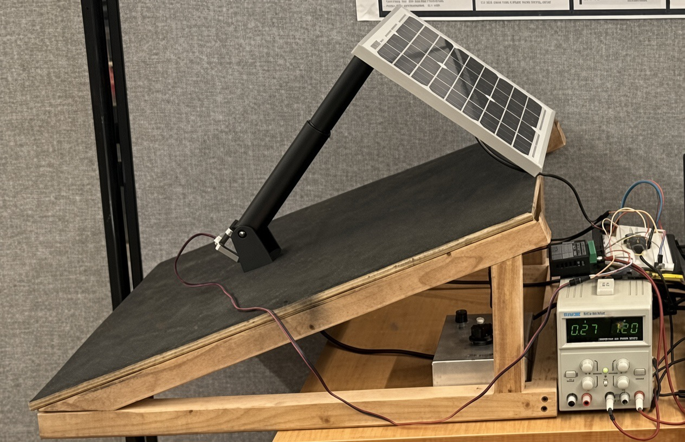
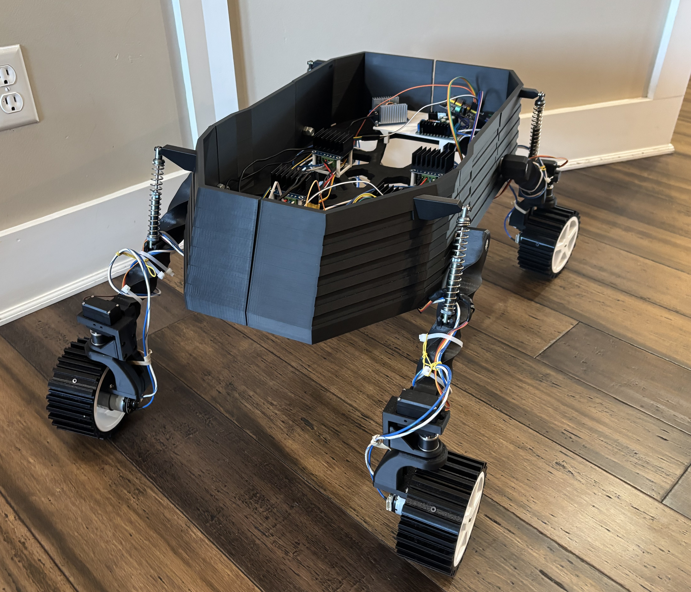
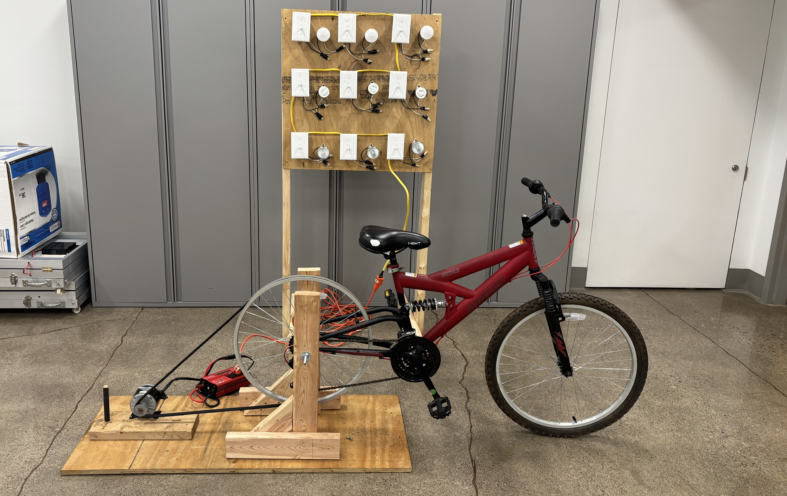
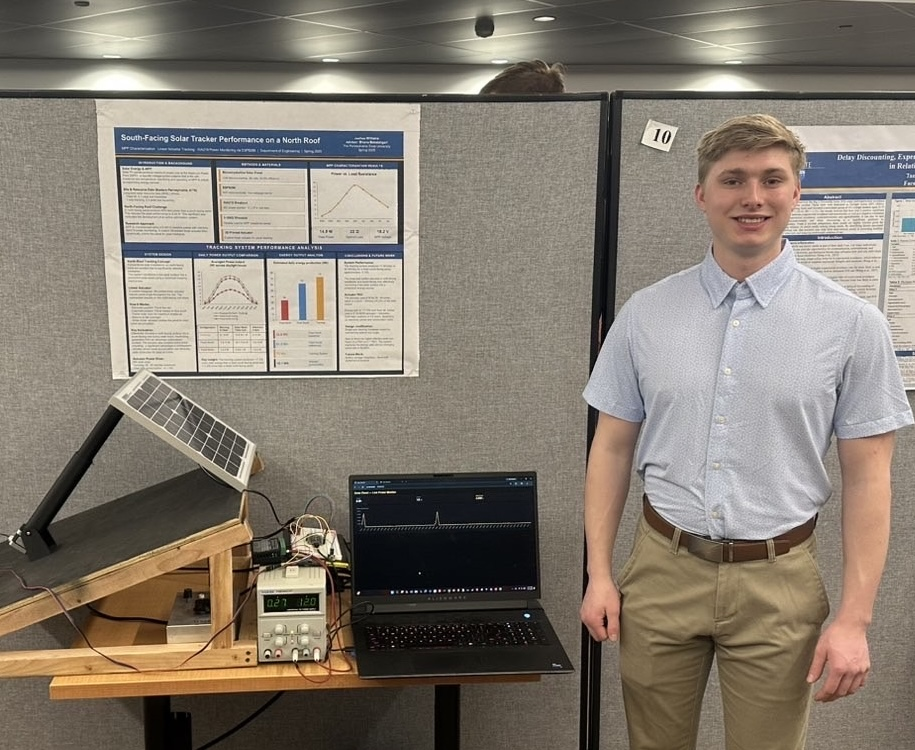
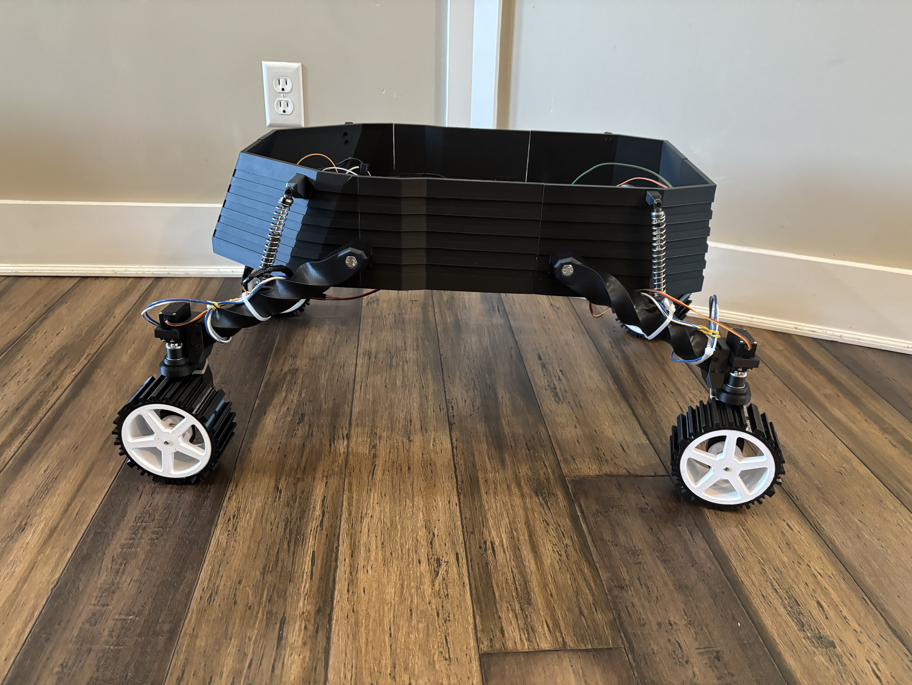
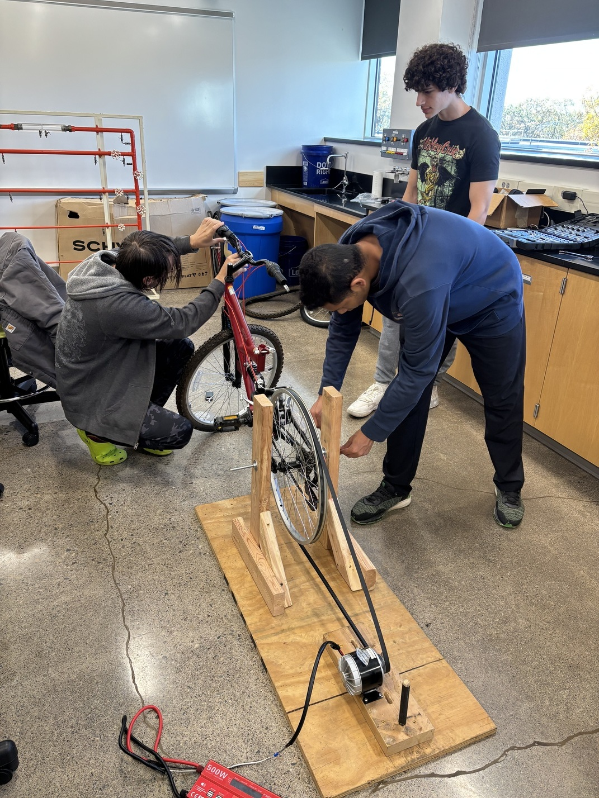
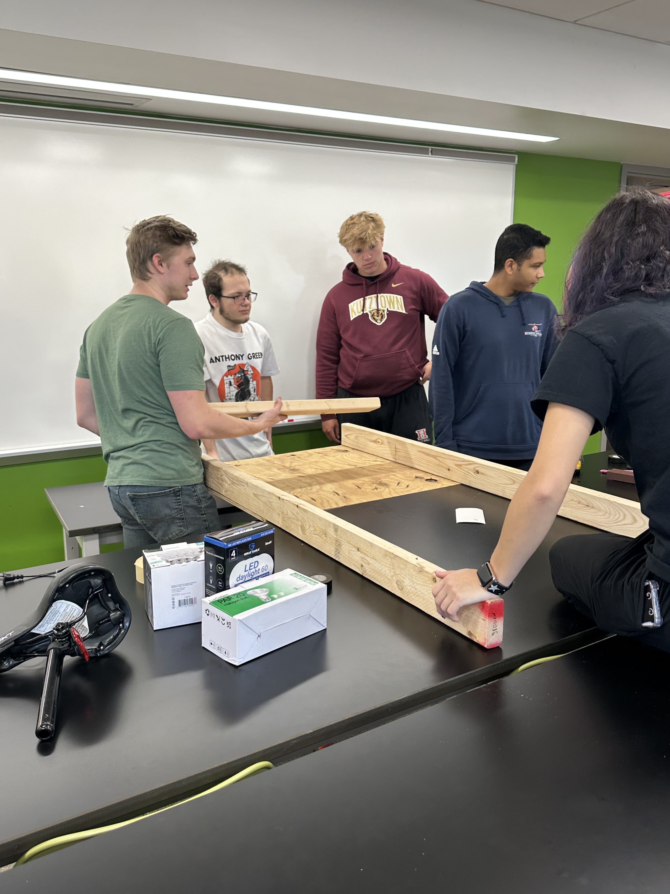
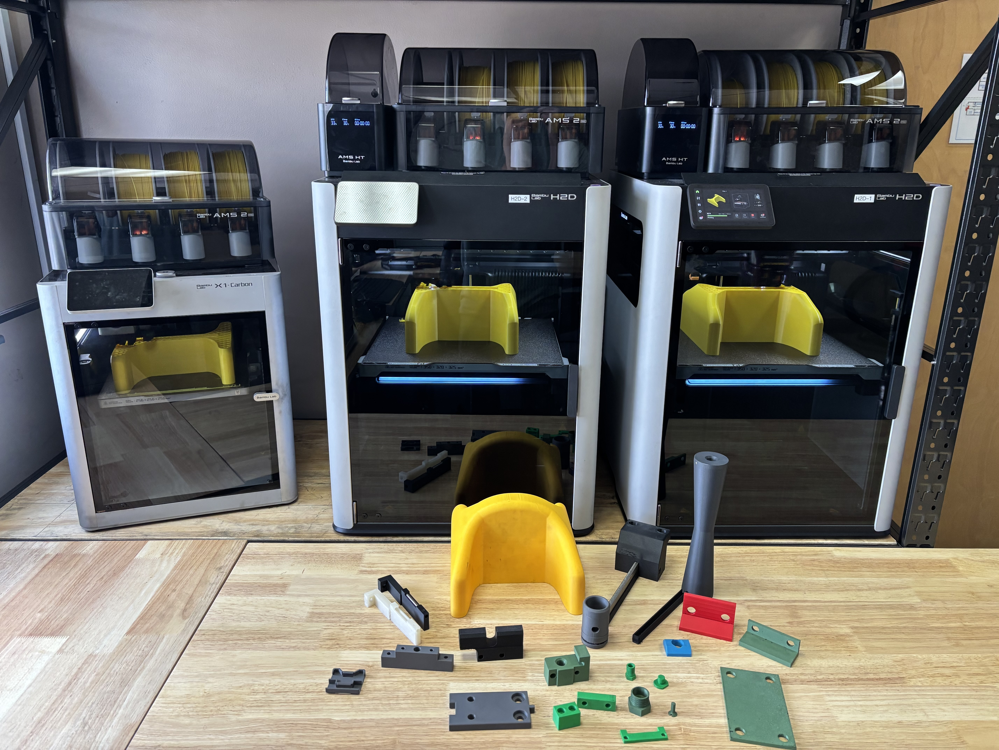
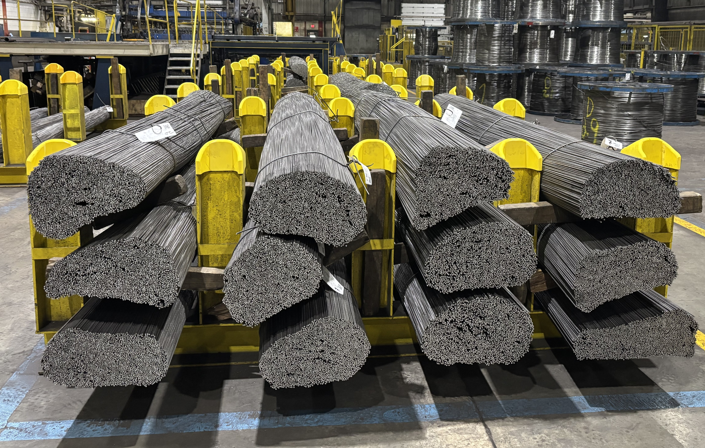
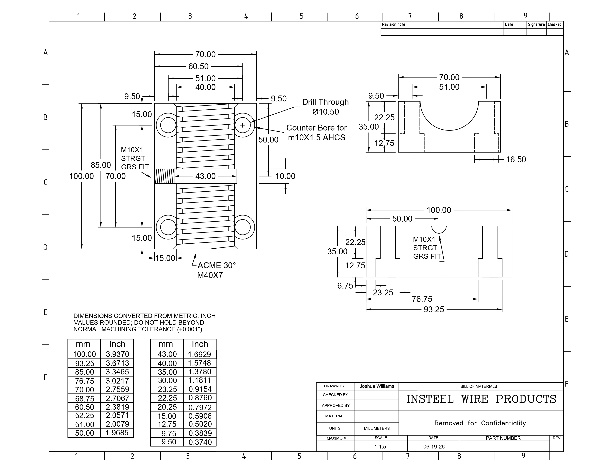

Joshua Williams
Alternative Energy & Power Generation Engineering Student
I build interdisciplinary engineering systems from concept to working hardware, combining mechanical and electrical design, CAD, embedded systems, robotics, fabrication, and real-world testing.
Background & Focus
I'm an undergraduate engineering student at Penn State University studying Alternative Energy and Power Generation, an interdisciplinary degree that spans mechanical, electrical, and power systems engineering. I hold a 3.50 GPA, I'm currently an Engineering Intern at Insteel Wire Products, and I serve as President of the Science and Engineering Club.
I'm seeking full-time engineering roles in aerospace, defense, renewable energy, or power systems starting Summer 2027. Long-term, my goal is to work on real hardware for space before eventually starting my own aerospace company.
Main Projects
Explore engineering projects I've designed, built, tested, and analyzed. Select a project to see the full write-up, engineering process, results, and technical documentation.

Single-Axis Solar Tracking System A single-axis tracker built to recover lost energy yield on a poorly oriented roof, tested against a fixed panel for a measured 17.5% improvement. View Project →
Recon-1: An Autonomous AI-Powered Rover An autonomous AI-powered rover with four-wheel independent drive and steering, a Raspberry Pi and ESP32 control stack, and a mostly 3D-printed structure using multiple materials depending on the part. View Project →
Bike Generator A custom-frame, human-powered generator with a regulated 12V output and independently switched LED, fluorescent, and halogen loads, built to demonstrate how electrical demand drives rider effort. View Project →Class Projects
Coursework from the Alternative Energy and Power Generation program at Penn State University.
Contact
I'm seeking full-time engineering roles in aerospace, defense, renewable energy, or power systems starting Summer 2027.
Single-Axis Solar Tracking System

Overview
North-facing rooftop solar panels operate at a fixed, suboptimal angle, losing a significant portion of potential daily energy output. This project designed, built, and tested a single-axis tracking system to dynamically orient a PV panel toward the sun's position throughout the day. The system achieved a measured 17.5% improvement in energy yield over a fixed-angle baseline, validated through direct power output comparison under matched conditions.
My Role
This was a solo honors research project. I was responsible for all design, fabrication, programming, and testing, from initial concept through the final symposium presentation.
Engineering & Design Work
I designed the tracker in Fusion 360 and 3D printed the custom structural components for the single-axis tracking mechanism, so the panel could follow the sun's path across the sky instead of holding a fixed angle. I wrote the Arduino firmware that uses coordinates and a real-time clock to calculate the sun's position and drive the actuator, adjusting panel angle throughout the day. I then collected and analyzed power output data across multiple test days, comparing the tracker's performance against a fixed panel to produce the results I presented at the symposium.
Engineering Decisions & Tradeoffs
I chose a coordinate and real-time-clock based tracking approach over light-dependent resistor (LDR) sensors. LDR systems are simpler, but they produce noisy output under cloud cover and can't distinguish diffuse light from direct sunlight. The calculation-based approach trades a bit more firmware complexity for smoother, more predictable tracking.
3D-printed structural components let me iterate quickly and kept fabrication costs low for this first version. For a future outdoor deployment, I'd want to move the critical joints to machined aluminum for better weather resistance and long-term durability.
This project also showed me how tightly mechanical design, embedded control, and power systems are coupled in a real energy application: frame geometry drove the actuator torque requirements, which sized the power supply, which in turn shaped the enclosure design. Presenting the work at the symposium also reinforced how important it is to explain technical work clearly to both engineering and non-engineering audiences.
Results
Recon-1: An Autonomous AI-Powered Rover

Overview
Recon-1 is a four-wheel-drive autonomous ground vehicle designed from the ground up in Fusion 360, including the chassis, independent suspension, and steering knuckles. Most of the rover's structure is 3D printed, using different materials for different parts depending on what each component needs to do mechanically. The rover is currently in hardware testing. The electronics stack pairs a Raspberry Pi 4 with an ESP32, driving encoder-based motors through H-bridge drivers off a 3S LiPo power system.
My Role
I'm the Hardware Lead on Recon-1, responsible for the mechanical design (chassis, suspension, and steering) and the power and motor control electronics. I'm also building the data logging system that tracks encoder speed, motor response, and power usage during tests. A partner is developing the Python and OpenCV navigation stack that gives the rover its autonomous, AI-driven behavior.
Engineering & Design Work
- Custom chassis, independent suspension, and steering knuckles designed in Fusion 360
- Four-wheel independent drive and steering
- Structure built primarily from 3D-printed components, mixing materials by part to balance strength, weight, and flexibility where each is needed
- Raspberry Pi 4 and ESP32 control architecture
- Encoder-based motors driven through H-bridge motor controllers
- 3S LiPo power system
- Data logging for encoder speed, motor response, and power usage during tests
- Python and OpenCV-based autonomous navigation, developed in collaboration with a project partner
Documentation
The project is documented with full CAD and a bill of materials on GitHub.
Bike Generator


Overview
The Bike Generator is a bicycle-based power generation and load-testing platform built with the Science and Engineering Club. We started with a bicycle, designed and built a custom frame around it, and turned it into a controlled electrical generation system. The point of the project was never just "pedal a bike, light a bulb." It's a hands-on way to demonstrate energy conversion, and more specifically, to show how increasing electrical demand on a generator translates directly into more mechanical effort from the person pedaling.
My Role
As President of the Science and Engineering Club, I led the planning, coordination, and execution of the build. I supported component selection, wiring, and testing, and helped guide the student team through assembling the frame and integrating the electrical system. I also presented the project at campus open house events as part of a hands-on STEM demonstration aimed at introducing prospective students to engineering and energy concepts.
Engineering Design
We designed and built a custom frame to hold the bicycle in a stationary position and mount the generator, wiring, and load bank, so the whole system could operate as one platform rather than a bike with parts strapped to it. Getting from "bicycle" to "generation system" meant working through both the mechanical side (how the bike's motion drives the generator) and the electrical side (how that generated power gets conditioned and delivered to a load) as a single integrated design, not two separate projects bolted together.
Power Conversion
Pedaling speed isn't constant, so the raw output of the generator swings around depending on how fast someone is riding. To make that usable, the system runs through a buck-boost converter, which steps the voltage up or down as needed to hold a steady 12V output regardless of whether the rider speeds up, slows down, or the electrical load changes. In practice, that means the lights see a stable supply even though the mechanical input driving the generator is anything but constant.
Electrical Loads
The regulated 12V output powers three sets of lights: 3 LED, 3 fluorescent, and 3 halogen. Each light can be switched on and off independently, which turns the light bank into an adjustable load rather than a fixed one. Switching in more lights, or switching to a less efficient bulb type, increases the electrical demand on the generator in a way we can control and observe in real time.
Human Power & Load Testing
This is the core engineering idea behind the project: electrical demand, generator load, and rider effort are all connected. When we switch on more lights, or swap in a less efficient bulb type, the generator has to supply more electrical power, which increases the mechanical load it puts back on the pedals. The rider feels that directly as harder pedaling. By changing which lights are on, we can walk someone through cause and effect in real time: flip a switch, feel the resistance change, and connect that back to the electrical demand that caused it. It's a simple, physical way to demonstrate a relationship that's usually just an equation on paper.
Generator
Power generation comes from a DC generator driven by the bike's pedaling motion, feeding into the buck-boost converter before reaching the load bank.
Electrical Output
The system delivers a regulated 12V output to the load bank, held steady by the buck-boost converter even as pedaling speed and the active electrical load change.
Testing
We test the system by changing which lights are active, moving between the LED, fluorescent, and halogen banks individually or in combination, and observing how the change in electrical load affects both the output regulation and the effort required to keep pedaling. This lets us demonstrate the demand-to-effort relationship directly to whoever's on the bike, rather than just describing it.
Engineering Challenges
- Integrating the bicycle with a custom-built frame so the whole system holds together as one stable platform
- Managing a generator output that changes constantly with pedaling speed
- Keeping the 12V output stable across a wide range of generator speeds and electrical loads
- Wiring three independently switched load banks (LED, fluorescent, halogen) without interference between them
- Coordinating the mechanical and electrical halves of the system so they function as one reliable platform for public demonstrations
What I Learned
This project made the connection between mechanical and electrical power feel real instead of theoretical. Watching the pedaling effort change the instant a load switches on is a much more direct lesson in energy conversion than anything from a textbook. It also gave me practical experience with power electronics (getting a buck-boost converter to actually hold a stable output under a changing load isn't trivial) and with system integration more broadly: getting the mechanical build, the generator, the power electronics, and the load bank to all work together as one dependable system, especially one that had to hold up to being used by the public at open house events.
Production Component Redesign, Additive Manufacturing & Process Improvement



Overview
As an Engineering Intern at Insteel Wire Products, I've worked across failure analysis, CAD redesign, and process improvement on production components. Beyond assigned CAD work, I proposed and helped build out the plant's additive manufacturing capability, wrote a new quality control training guide, and completed a plant-wide drainage review. The component redesign work alone reduced costs on select components by up to 97%, generated more than $10,000 in annual savings, and cut part defects by more than 50% through structured FMEA.
Engineering Work
- Produced 100+ 2D technical drawings in AutoCAD
- Developed 75+ 3D CAD components in Fusion 360
- Conducted FMEA on manufacturing processes to identify failure modes and implement corrective actions
- Performed root cause analysis on production failures
- Revised SOPs and LOTO procedures (OSHA 1910.147) to standardize testing protocols, reduce operator error, and maintain safety compliance
Additive Manufacturing Program
I proposed and justified what became the plant's additive manufacturing program. When I started, there was no established 3D printing capability on the floor; the program has since grown to three printers in active use. I looked at which parts were good candidates to move from traditional manufacturing to 3D printing, weighing cost, lead time, and part availability against the tradeoffs of the process, and designed components specifically to take advantage of what additive manufacturing does well.
Quality Control Training Guide
Before this, training on the floor relied heavily on whichever experienced employee happened to be teaching at the time, so the information passed down wasn't always consistent. I designed and wrote a quality control training guide to standardize that process, giving employees a single reference for training and day-to-day work instead of relying on informal, person-to-person knowledge transfer.
Plant Drainage Review
I also completed a plant-wide drainage review and proposed improvements to support future renovations and infrastructure planning, looking beyond my immediate CAD assignments to flag issues that could affect longer-term facility upgrades.
Results
Solar Design Project
Overview
For this class project, my team and I picked an actual house and worked through the full process of sizing a residential solar system for it, rather than designing something generic on paper. That meant starting from the home's real energy usage and roof conditions and working forward to a complete, justified system, not just picking panels off a spec sheet.
Engineering & Design Work
- Estimated the home's electricity usage to determine how much solar generation the system needed to offset
- Selected a specific solar panel model based on efficiency, cost, and the physical roof space available
- Sized and selected an appropriate inverter configuration for the chosen panel array
- Evaluated the roof's orientation, tilt, and shading to estimate how the site's specific conditions would affect production
- Calculated expected energy output based on the local solar resource and the selected equipment
- Compared how the actual placement of the array (orientation and location on the roof) affected performance relative to an idealized south-facing setup
What I Took From It
The biggest thing I took from this project was learning how much real site conditions can affect a solar design. Using the barn gave me more roof space and a simpler layout, but the nearby trees created varying shade across the roof. That was a big reason I chose microinverters, since each panel could perform more independently. Overall, it showed me that a good solar design is not just about sizing the system. You have to work with the actual site and make decisions around its limitations.
Reversible Solid Oxide Cells (RSOFC)
Overview
This project examined reversible solid oxide cells (RSOFCs) as a possible power and energy storage solution for a Mars surface mission. Unlike a standard battery, a reversible solid oxide cell can run in two directions: as a fuel cell producing electricity, and in reverse as an electrolyzer producing and storing fuel, which makes it worth a closer look for a location where resupply isn't an option. The 10-page paper covers how the technology works, how it compares to other candidate power systems, and where it could realistically fit into a longer-duration Mars mission architecture.
My Role
I researched and wrote the paper, working through the electrochemistry behind RSOFC operation, comparing it against other power generation and storage options considered for Mars missions, and building a case for where it could fit into a realistic mission architecture given its advantages and limitations.
What I Took From It
This was less about a single number and more about tradeoff analysis: energy density, mass, reliability, and in-situ resource use all pull in different directions when you're choosing a power system for a mission with no resupply option. Working through that comparison gave me a much better appreciation for how power system selection shapes the rest of a mission architecture, which is directly relevant to the kind of aerospace hardware work I want to do long-term.